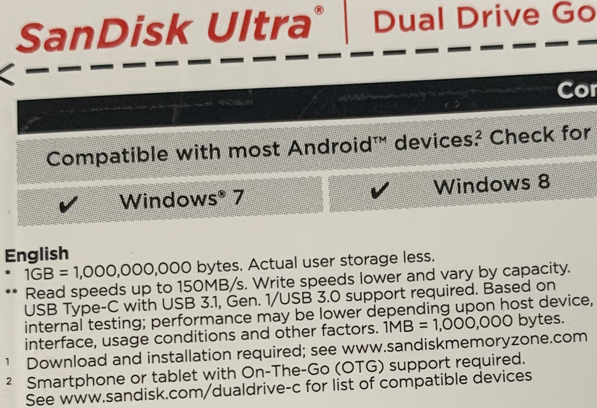

01Introdução
(Escreve o 7 no quadro.) É um número! O que é um número?
É uma representação de uma quantidade, distância ou ordem.
Colocar uma carinha e perguntar: é um número?
O que é sistema?
Partes com propósito comum formando um todo. As partes podem ser subsistemas.
Objetivos
- Levar o estudante a separar o que é quantidade e o que é número.
- Compreender como foi criada a representação numérica computacional.
- Quais as razões de esta ser a representação numérica usada no computador.
Como são formados os números?
- Conjunto de símbolos
- Símbolos associados a quantidades
- Regra de formação
Tópicos de conversão
- Notação: índices de base — ex: 1001112, 1AFB16
- Base n → Decimal: expansão em potência de n
- Decimal → Base n: divisões sucessivas por n
- Fracionários (ex: 0,5625): multiplicações sucessivas pela base
- Binário ↔ Hexadecimal: agrupamento de 4 bits
02Como os Computadores Entendem as Informações
Conjuntos matemáticos são infinitos e abstratos; o computador trabalha com representações finitas e em bits. Cada conjunto tem um tipo computacional correspondente:
| Conjunto matemático | Exemplos | Tipo computacional | Notação |
|---|---|---|---|
| ℕ Naturais | 0, 1, 2, 3 … | Inteiro não sinalizado | unsigned (X) |
| ℤ Inteiros | … −2, −1, 0, 1, 2 … | Inteiro sinalizado | signed (O) |
| ℚ Racionais | ½, ¾, −0,25 … | Ponto flutuante | float / double (D) |
Inteiros (int) representam um número fixo de combinações; ponto flutuante (float/double) representa também a parte fracionária, ao custo de precisão finita.
03Limites de Números Binários (não sinalizados)
Com 1 bit registramos apenas dois valores: 0 ou 1. Quantas combinações são possíveis com Nb bits?
Legenda
| Símbolo | Significado |
|---|---|
Nb | Número de bits |
Nc | Número de combinações possíveis com Nb bits |
Vmin | Valor mínimo representável = 0 |
Vmax | Valor máximo representável com Nb bits |
Exemplos
| Nb | Nc = 2Nb | Vmin | Vmax = 2Nb − 1 | Padrões (mín. e máx.) |
|---|---|---|---|---|
| 2 bits | 4 | 0 | 3 | 00 … 11 |
| 3 bits | 8 | 0 | 7 | 000 … 111 |
| 7 bits | 128 | 0 | 127 | 0000000 … 1111111 |
| 16 bits | 65.536 | 0 | 65.535 | 0000…0 … 1111…1 |
| 32 bits | 4.294.967.296 | 0 | 4.294.967.295 | — |
Vmin = 0
Vmax = Nc − 1 = 2Nb − 1
04Número Mínimo de Bits para Representar um Inteiro
Dado um número decimal N, quantos bits são necessários para representá-lo em binário sem sinal?
Raciocínio por exemplos
| N (decimal) | Binário | Bits mínimos |
|---|---|---|
| 0 | 0 | 1 (por intuição — zero precisa de ao menos 1 bit) |
| 1 | 1 | 1 |
| 2 | 102 | 2 |
| 8 | 10002 | 4 |
Derivação para N = 8
Fórmula geral — inteiro não sinalizado
Exemplo — N = 30.000
05Inteiros Binários Sinalizados
Características
Um inteiro sinalizado usa o bit mais significativo (MSB) como bit de sinal:
- MSB = 0 → número positivo ou zero. A representação é idêntica ao modo não sinalizado.
- MSB = 1 → número negativo. A representação segue o complemento de 2.
Para obter o negativo de um número positivo: inverta todos os bits e some 1.
Exemplo (3 bits): +3 =
011 → inverte → 100 → +1 → 101 = −3 ✓
Diagrama de relógio — complemento de 2
O círculo abaixo representa todos os valores de Nb bits dispostos como um relógio. Positivos à direita (verde), negativos à esquerda (laranja), Vmin em âmbar. A linha vermelha tracejada é o ponto de overflow — onde somar 1 ao maior positivo "vira" o maior negativo.
Limites do inteiro sinalizado
| Nb | Nc = 2Nb | Vmin | Vmax |
|---|---|---|---|
| 2 bits | 4 | −2 | 1 |
| 3 bits | 8 | −4 | 3 |
| 8 bits | 256 | −128 | 127 |
| 16 bits | 65.536 | −32.768 | 32.767 |
| 32 bits | 4.294.967.296 | −2.147.483.648 | 2.147.483.647 |
Vmax = 2Nb−1 − 1
Vmin = −2Nb−1 = −(Vmax + 1)
|Vmin| = Vmax + 1: há sempre um negativo a mais do que positivos. Com 3 bits: Vmax = 3, mas Vmin = −4. O complemento de 2 de Vmin é ele mesmo (caso especial).
Número mínimo de bits para inteiro sinalizado
Para N negativo
O "+1" reserva o bit de sinal. Arredondar para cima.
06Aritmética em Base Binária
Soma
0 + 1 = 1
1 + 0 = 1
1 + 1 = 0 (carry = 1)
Subtração com Complemento de 2
Em vez de hardware de subtração separado, converte-se A − B em A + (−B), obtendo −B pelo complemento de 2. O mesmo somador é reutilizado — essa é a razão pela qual CPUs usam complemento de 2.
1. Calcule o complemento de 2 de B: inverta todos os bits e some 1.
2. Some com A usando aritmética binária normal.
3. Descarte o carry final (se o resultado estiver dentro do intervalo representável).
07Operações Bitwise
Operam bit a bit sobre a representação binária de inteiros, sem interpretar sinal.
08Propriedades dos Números Binários
| Propriedade | Regra | Exemplo |
|---|---|---|
| Paridade (par / ímpar) | LSB = 0 → par | LSB = 1 → ímpar | 10102 = 10 (par); 10112 = 11 (ímpar) |
| Multiplicação por 2 | Deslocamento à esquerda << 1 |
0011 (3) → 0110 (6) |
| Divisão inteira por 2 | Deslocamento à direita >> 1 |
0110 (6) → 0011 (3) |
09Grandezas em Computação
Unidades básicas: BIT, BYTE (8 bits), WORD, DWORD, QWORD.
Existem dois sistemas de prefixos — e a confusão entre eles explica por que um pendrive ou HD parece "menor" do que o anunciado.
Sistema Internacional (SI) — Base Decimal
Uso: velocidade de internet, HDs, SSDs e especificações comerciais de hardware.
| Prefixo | Bit (b) | Byte (B) | Valor (Base 10) |
|---|---|---|---|
| kilo (k) | kb | kB | 103 = 1.000 |
| mega (M) | Mb | MB | 106 = 1.000.000 |
| giga (G) | Gb | GB | 109 = 1.000.000.000 |
| tera (T) | Tb | TB | 1012 |
| peta (P) | Pb | PB | 1015 |
Sistema IEC — Base Binária
Uso: memória RAM, cache de processador, sistemas operacionais (ex: Windows).
| Prefixo | Bit (b) | Byte (B) | Valor (Base 2) |
|---|---|---|---|
| kibi (Ki) | Kib | KiB | 210 = 1.024 |
| mebi (Mi) | Mib | MiB | 220 = 1.048.576 |
| gibi (Gi) | Gib | GiB | 230 = 1.073.741.824 |
| tebi (Ti) | Tib | TiB | 240 |
| pebi (Pi) | Pib | PiB | 250 |
Exemplo real — embalagem SanDisk Ultra Dual Drive Go

* 1GB = 1,000,000,000 bytes. Actual user storage less.
** Read speeds up to 150MB/s. Write speeds lower and vary by capacity. USB Type-C with USB 3.1, Gen. 1/USB 3.0 support required. Based on internal testing; performance may be lower depending upon host device, interface, usage conditions and other factors. 1MB = 1,000,000 bytes.
Download and installation required; see www.sandiskmemoryzone.com. Smartphone or tablet with On-The-Go (OTG) support required. See www.sandisk.com/dualdrive-c for list of compatible devices. Compatible with most Android™ devices. ✔ Windows® 7 ✔ Windows 8.
O fabricante usa SI: 1 GB = 109 bytes. O Windows exibe em GiB (IEC): 1 GiB = 230 ≈ 1,074 × 109 bytes. Um disco de 128 GB (SI) equivale a 128 × 109 / 230 ≈ 119,2 GiB — exatamente o que o sistema operacional reporta. Não é engano do fabricante: são dois sistemas diferentes de prefixos.